Hermes Agent는 무엇이고 무엇이 새로워졌나요
Hermes Agent는 Nous Research가 공개한 오픈소스 AI(Artificial Intelligence) 에이전트예요. 발표자는 세 가지로 요약해요. 스스로 행동하고, 나를 기억하고, 배워요. 슬라이드의 세 카드가 정확히 이 세 가지예요. 맨 오른쪽 카드에 강조 표시가 있는데, 일을 해내는 방법을 찾으면 그 단계를 스킬로 저장해 다음엔 더 빨리 한다는 뜻이에요.
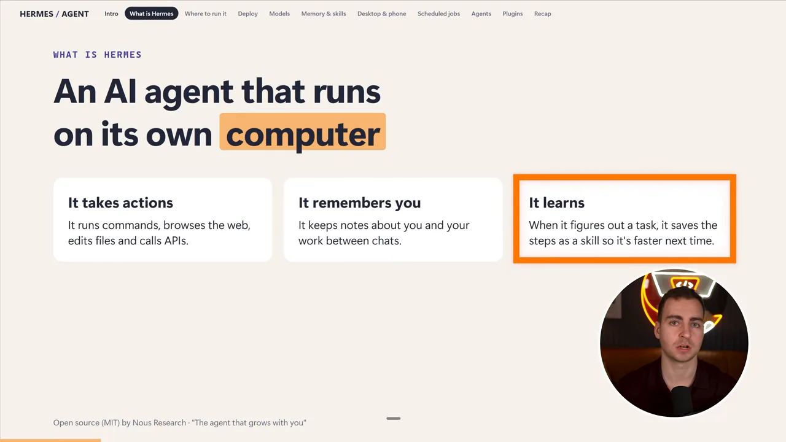
그렇다고 백그라운드에 던져 두는 도구는 아니라고 해요. 매일 대화하며 가르칠 때 가장 큰 가치를 얻는다는 게 발표자의 경험이에요.
ChatGPT, Claude Code와 무엇이 다른가요
발표자는 비교표를 하나 띄워요. 세로줄은 ChatGPT·Claude 앱, Claude Code·Codex, Hermes Agent이고 가로줄은 어디서 도는지, 무엇을 위한 건지, 자리를 비워도 일하는지, 폰으로 말을 걸 수 있는지, 스스로 스킬을 배우는지, 아무 모델이나 쓸 수 있는지예요. 오른쪽 Hermes 칸만 초록색 답으로 채워져 있어요.

| ChatGPT·Claude 앱 | Claude Code·Codex | Hermes Agent | |
|---|---|---|---|
| 어디서 도나요 | 그 회사 웹사이트 | 내 노트북의 프로젝트 폴더 | 내 서버, 24시간 |
| 무엇을 위한 건가요 | 질문과 대화 | 코드 작성 | 일상 업무와 자동화 |
| 자리를 비워도 일하나요 | 아니요 | 사실상 아니요 | 네, 예약 작업으로 |
| 폰으로 말을 걸 수 있나요 | 앱으로만 | 아니요 | 폰 브라우저, 텔레그램·디스코드·슬랙 등 |
| 새 스킬을 스스로 배우나요 | 아니요 | 사람이 직접 써요 | 스스로 쓰고 고쳐요 |
| 아무 모델이나 쓸 수 있나요 | 아니요 | 대체로 아니요 | 공급자 40곳쯤, 또는 로컬 모델 |
발표자가 가장 크게 보는 장점은 마지막 줄이에요. 지금 GPT(Generative Pre-trained Transformer)가 가장 좋으면 GPT로, Claude가 좋으면 Claude로, 로컬 모델이 필요하면 로컬로 바꾸면 돼요. 어느 회사의 가격 정책에도 묶이지 않고, 내 서버에 둔 내 에이전트를 내가 통제해요.
6월 이후 새로 생긴 것
예전 강의를 본 사람을 위해 새 기능을 한 장에 모아 뒀어요. 왼쪽 열이 데스크톱 앱, 봇 모드, 커넥터, 로컬 모델이고 오른쪽 열이 플러그인 카탈로그, 기억이 있는 예약 작업, 실시간 서브에이전트예요. 초록색 NEW 배지가 붙은 다섯 개가 완전히 새 기능이에요.
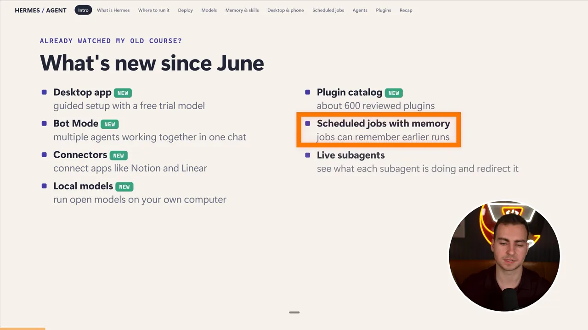
영상이 끝날 때 갖추게 될 것도 네 가지로 정리돼요. 24시간 도는 내 서버, 데스크톱 앱과 폰에서의 대화, 매일 반복되는 예약 작업, 그리고 한 작업을 함께 하는 이름 붙은 여러 에이전트예요.
여섯 부분과 배우는 방식
발표자는 Hermes를 하네스라고 불러요. 모델 하나를 가운데 두고 그 주변을 도구와 틀로 감싼 것이라는 뜻이에요. 슬라이드는 여섯 부분을 두 줄로 나눠 보여 줘요. 윗줄이 모델·도구·메모리, 아랫줄이 스킬·게이트웨이·크론이에요. 스킬 카드만 진한 색인 건 발표자가 이걸 가장 큰 차별점으로 보기 때문이에요.

- 모델 — 실제로 생각하는 LLM(Large Language Model)이에요. OpenRouter, Claude, DeepSeek, 로컬 모델 등 거의 무엇이든 꽂을 수 있고 작업마다 다르게 쓸 수도 있어요.
- 도구 — 터미널, 웹 검색, 브라우저, 파일처럼 Hermes가 쓰는 손발이에요. 기본 도구 외에 직접 추가할 수 있고, 발표자는 어떤 도구를 붙이느냐가 결과를 크게 바꾼다고 말해요.
- 메모리 — 나에 대한 정보, 지난 세션과 대화 기록, 중요한 맥락을 저장해요. 전부 한꺼번에 불러오지 않고 필요할 때 검색해요.
- 스킬 — 작업 방법을 적은 재사용 마크다운 파일이에요. Hermes가 알아서 만들고 고쳐요.
- 게이트웨이 — 내가 Hermes와 대화하는 통로예요. 데스크톱 앱, 브라우저, 텔레그램·디스코드·왓츠앱 같은 앱이 다 여기 속해요.
- 크론 — 매일, 매시간, 평일 오후 5시처럼 일정에 맞춰 도는 작업이에요.
Hermes는 어떻게 배우나요
배우는 과정은 화살표 네 칸으로 그려져 있어요. 첫 칸은 부탁("유튜브 아이디어 브리프 만들어 줘"), 둘째 칸은 검색하고 시도하고 오류를 고치며 방법을 찾는 단계예요. 셋째 파란 칸에서 그 방법을 ~/.hermes/skills/.../SKILL.md로 저장하고, 마지막 주황 칸에서 다음번엔 더 빨라져요. 주황 칸 아래 작은 글씨는 '스킬을 계속 개선한다'예요.

결과를 고쳐 달라고 하거나 방식이 틀렸다고 말하면 Hermes가 그 스킬을 업데이트해요. 발표자는 이 학습을 맡는 내부 과정을 스킬 큐레이터라고 불러요. 직접 "이걸 배워"라고 시킬 수도 있어요. 다른 하네스들도 이제 이 방식을 따라 하지만, Hermes가 먼저 내놓았기 때문에 많이 쓰이게 됐다고 해요.
어디에 설치할까요: VPS와 Docker
발표자는 Hermes를 VPS에 두라고 권해요. 노트북에 둬도 되지만 비용으로도 보안으로도 좋은 선택이 아니라는 거예요. 슬라이드는 두 칸을 나란히 놓고 비교해요. 왼쪽 분홍 칸이 노트북의 문제, 오른쪽 흰 칸이 VPS의 장점이에요.
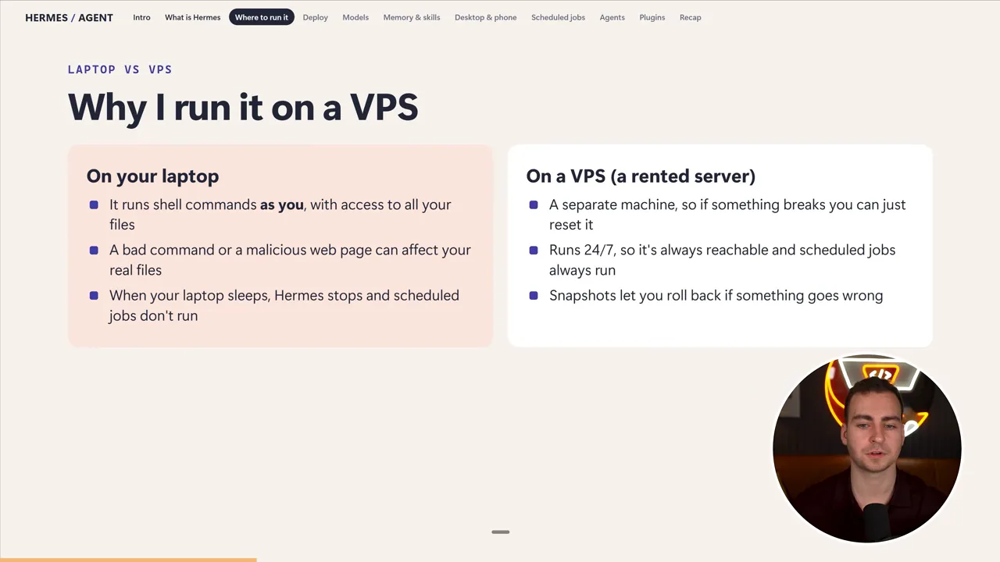
| 노트북에 두면 | VPS(빌린 서버)에 두면 |
|---|---|
| 내 권한으로 셸 명령을 실행해서 모든 파일에 손이 닿아요 | 별도 기계라 뭔가 망가지면 초기화하면 돼요 |
| 잘못된 명령이나 악성 웹페이지 하나가 실제 파일을 건드릴 수 있어요 | 24시간 켜져 있어 언제든 접속되고 예약 작업이 늘 돌아요 |
| 노트북이 잠들면 Hermes도 멈추고 예약 작업도 안 돌아요 | 스냅샷으로 문제 생기기 전으로 되돌릴 수 있어요 |
말로 덧붙인 이유도 있어요. VPS는 데이터센터에 있어 방화벽과 전용 네트워크를 갖추고 있고, 한 달 몇 달러면 빌릴 수 있어요. 600~700달러짜리 전용 기기를 사면 보안 설정을 직접 해야 하고 문제가 생겨도 쉽게 밀어 버릴 수 없지만, VPS는 언제든 끄고 지우고 결제를 멈출 수 있어요. 자동 백업도 돼요.
설치하기
발표자는 Hermes 원클릭 설치를 지원하는 VPS 상품을 골라 배포했어요. 요금제를 고르고 배포를 누르면 몇 분 뒤 Hermes가 Docker 컨테이너로 깔려요. 다른 업체나 내 컴퓨터에 깔 때는 공식 설치 문서를 따르면 돼요. 문서의 'Without Hermes Desktop' 부분에 주황 테두리로 강조된 한 줄이 리눅스·macOS·WSL(Windows Subsystem for Linux)용 설치 명령이에요.
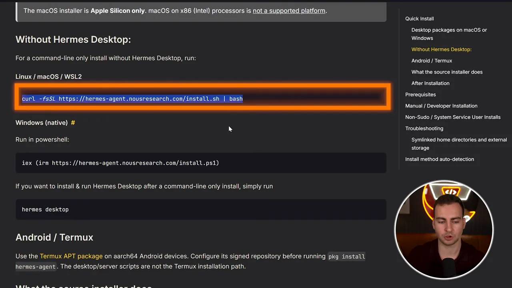
hermes desktop으로 데스크톱 앱을 띄울 수 있어요. 영상 09:45에서 보기curl -fsSL https://hermes-agent.nousresearch.com/install.sh | bash데스크톱 앱이 내 컴퓨터에 설치를 대신해 줄 수도 있어요. 다만 그렇게 깔면 컴퓨터를 끄는 순간 Hermes도 꺼져요.
웹 대시보드에 처음 들어가기
배포가 끝나면 서버 관리 화면에서 Hermes 컨테이너의 Manage를 눌러 Environment 탭을 열어요. 거기 있는 ADMIN_USERNAME과 ADMIN_PASSWORD로 로그인하면 Hermes 웹 대시보드가 떠요. 왼쪽에 메뉴가 세로로 늘어서 있고, 가운데 HERMES-AGENT 로고 아래로 쓸 수 있는 도구와 스킬 목록이 나와요.
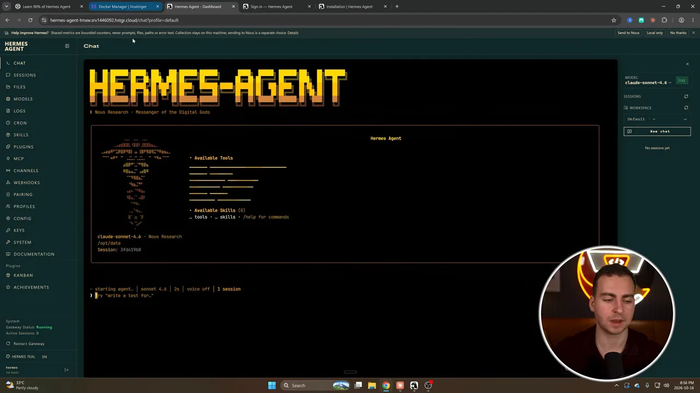
대시보드에서 대화는 바로 되지만, 모델을 바꾸거나 일부 설정을 하려면 터미널이 필요해요. 다음 섹션이 그 이야기예요.
세 가지 접근 경로: 브라우저, 터미널, Claude Code
원클릭 설치를 하면 Hermes는 VPS 안의 Docker 컨테이너에 들어가요. 그래서 Hermes에 닿으려면 한 겹을 더 지나야 해요. 슬라이드 윗줄이 그 경로예요. 내 노트북에서 SSH(Secure Shell)로 VPS에 들어가고, 다시 docker exec로 컨테이너에 들어가야 Hermes가 있어요. 아랫줄은 Hermes를 다루는 세 가지 방법이에요.
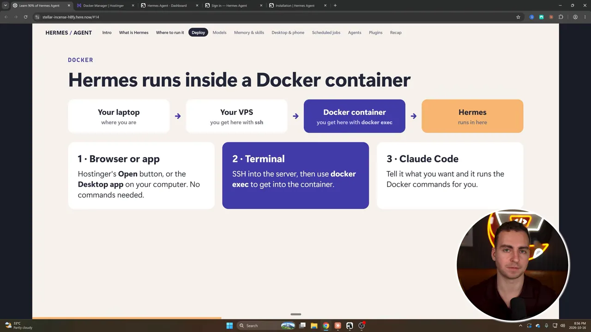
- 브라우저나 데스크톱 앱 — 서버 관리 화면의 Open 버튼이나 데스크톱 앱으로 들어가요. 명령어가 필요 없어요.
- 터미널 — SSH로 서버에 들어간 뒤
docker exec로 컨테이너에 들어가요. 서버 관리 화면의 Terminal 버튼이 이걸 한 번에 해 줘요. - Claude Code — 원하는 걸 말하면 Claude Code가 Docker 명령을 대신 실행해요.
터미널로 Hermes 다루기
Terminal 버튼을 누르면 'You are now in Docker container …'라는 안내와 함께 컨테이너 안의 셸이 열려요. 여기서 hermes를 치면 터미널용 대화 화면, 즉 TUI(Text-based User Interface)가 떠요. 화면 오른쪽에 쓸 수 있는 도구와 스킬이 분류별로 나오고, 아래쪽 회색 줄에 '21 tools · 54 skills'라고 적혀 있어요. 왼쪽 아래는 지금 쓰는 모델과 세션 번호예요.
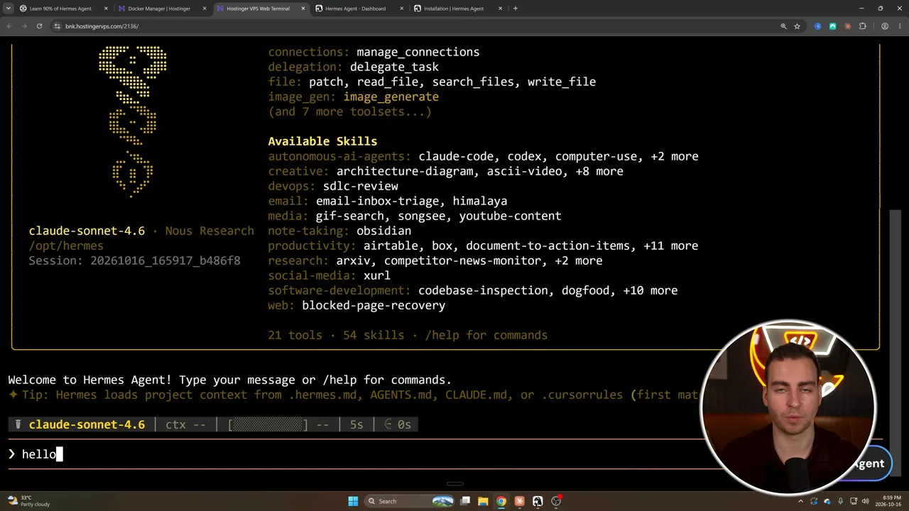
TUI는 Ctrl+C로 빠져나와요. 같은 셸에서 hermes setup처럼 다른 명령을 치면 모델, 도구, MCP(Model Context Protocol) 서버, 플러그인 같은 설정을 바꿀 수 있어요. 대부분은 웹 화면에서도 되지만, 일부는 명령줄에서만 돼요.
안전장치로 Claude Code 깔아 두기
발표자가 꼭 권하는 습관이에요. Hermes가 설치된 곳(VPS든 내 컴퓨터든)에 Claude Code나 Codex CLI(Command Line Interface)를 같이 깔아 둬요. 그러면 Hermes가 멈추거나 설정이 꼬였을 때 "Hermes가 안 돌아, 고쳐 줘"라고 시키면 돼요. 직접 헤매는 것보다 훨씬 빨라요.
설치는 한 줄이에요. 웹 터미널에서는 키보드 단축키로 붙여넣기가 안 되니 오른쪽 클릭 → Paste를 써야 해요. 화면에서 'Claude Code successfully installed!'와 설치 위치 ~/.local/bin/claude가 보이면 끝이에요.
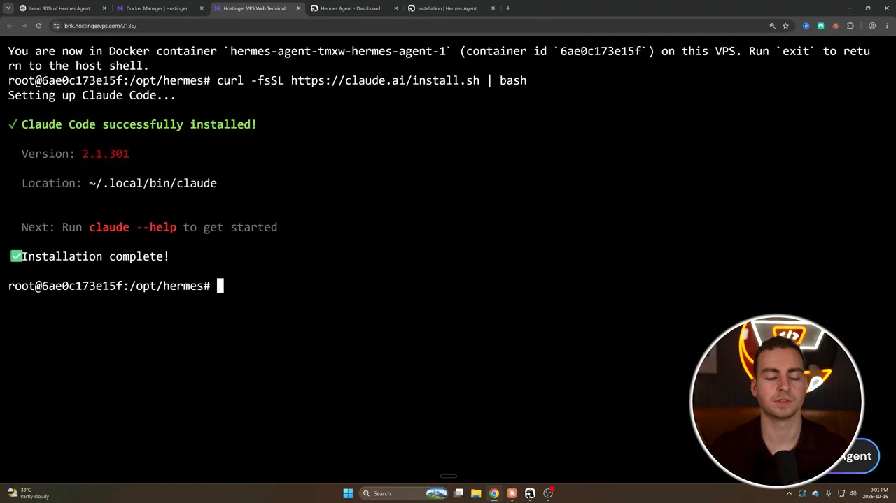
root@…:/opt/hermes#예요. 컨테이너 안, Hermes 폴더에 깔았다는 뜻이에요. 영상 15:40에서 보기curl -fsSL https://claude.ai/install.sh | bash
claude # 실행 후 구독 계정으로 로그인이후 claude를 실행하면 로그인 링크가 나와요. 브라우저에서 인증하고 받은 코드를 다시 오른쪽 클릭으로 붙여 넣으면 돼요. 폴더를 신뢰하느냐는 질문에 Yes를 고르면 바로 쓸 수 있어요.
모델 고르기
원클릭 설치는 업체가 주는 AI 크레딧과 라우터를 기본 모델로 붙여 줘요. 발표자는 내 공급자로 바꾸는 게 낫다고 말해요. 슬라이드는 선택지를 다섯 줄로 정리해요. 가운데 열이 누구에게 맞는지, 오른쪽 열이 참고할 점이에요. OpenRouter 줄에만 '이 영상에서 이걸로 바꿔요'라는 메모가 붙어 있어요.
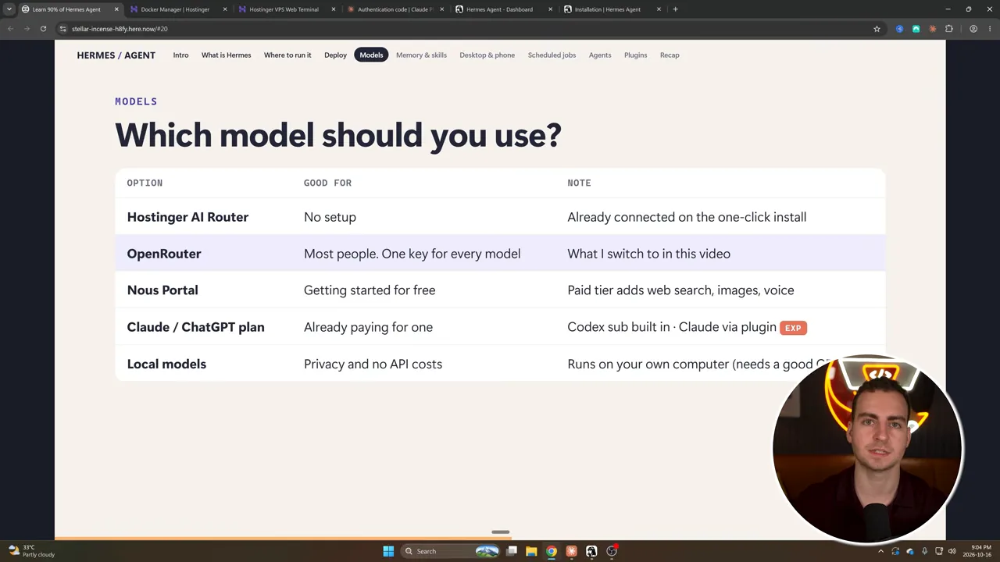
| 선택지 | 누구에게 맞나요 | 참고할 점 |
|---|---|---|
| OpenRouter | 대부분의 사람. 키 하나로 모든 모델 | 슬라이드에는 '이 영상에서 이걸로 바꿔요'라고 적혀 있어요 |
| Nous Portal | 무료로 시작하고 싶을 때 | 유료 등급에서 웹 검색·이미지·음성이 붙어요 |
| Claude / ChatGPT 구독 | 이미 구독료를 내고 있을 때 | Codex 구독은 내장, Claude는 플러그인으로 연결해요 |
| 로컬 모델 | 개인정보가 중요하고 API(Application Programming Interface) 비용을 없애고 싶을 때 | 내 컴퓨터에서 돌아서 사양이 좋아야 해요 |
슬라이드와 달리 실제 시연에서는 ChatGPT(Codex) 구독을 연결했어요. 발표자는 토큰당 비용으로 따지면 가장 싸고 좋은 선택이라 이걸 쓴다고 해요.
모델을 바꾸는 순서
컨테이너 터미널에서 hermes setup을 치면 긴 전체 설정이 시작돼요. 모델만 바꿀 거면 뒤에 model을 붙여요. 그러면 공급자 선택 목록으로 바로 가요. 목록이 길어서 Anthropic, OpenAI, Qwen, xAI, GitHub Copilot, DeepSeek, Ollama Cloud 같은 이름이 한 화면을 다 채워요.
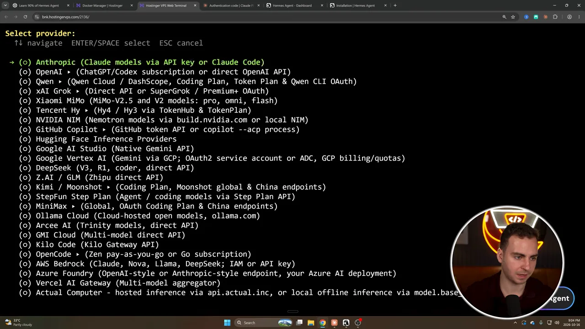
hermes setup model- 목록에서 OpenAI를 골라 Enter를 눌러요 — 찾기 좀 어려우니 위로 스크롤해 보세요.
- 나온 코드를 복사해 인증 페이지에 붙여 넣어요 — 웹 터미널에서는 오른쪽 클릭으로 복사해요. 'Codex에 로그인했다'는 안내가 떠요
- 모델과 추론 수준을 골라요 — 발표자는 gpt-6.1-sol과 medium을 골랐어요.
- 대시보드에서 새 채팅을 열고 hello를 보내 봐요 모델 이름이 바뀌어 있고 답이 와요
설정 후 다시 hermes를 띄우면 TUI 왼쪽 아래 모델 이름이 gpt-6.1-sol로 바뀌어 있어요. 오른쪽 위에는 Hermes 버전 v0.22.2가, 아래쪽에는 '21 tools · 53 skills'가 보여요.
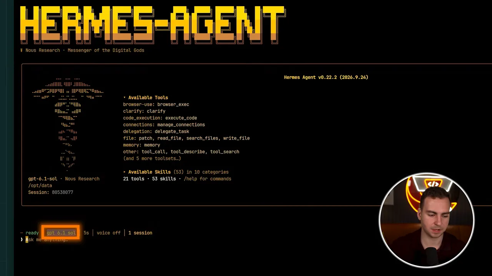
데스크톱 앱 연결하기
데스크톱 앱은 공식 사이트의 desktop 페이지에서 받아요. 페이지 소개 문구는 'macOS, Windows용 Hermes Agent 앱, 터미널 밖에서 쓰는 스킬·에이전트·도구'예요. 앱 왼쪽에는 연결된 에이전트와 게이트웨이, 세션, 봇 관리가 보여요.
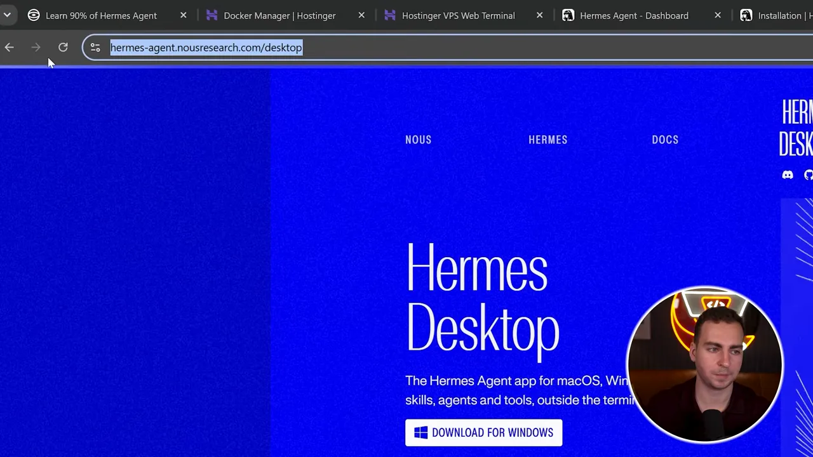
hermes-agent.nousresearch.com/desktop에서 운영체제에 맞는 설치 파일을 받아요. 영상 19:23에서 보기여기서 발표자가 경고하는 게 있어요. 설치하자마자 대화를 시작하면 VPS의 Hermes가 아니라 내 컴퓨터에 따로 도는 Hermes를 쓰게 돼요. 컴퓨터를 끄면 멈추고, VPS 쪽과 동기화되지 않고, 내 파일과 시스템 전체에 접근해요. 두 가지를 헷갈리지 말라는 거예요.
VPS의 Hermes에 연결하기
설정 메뉴의 Gateways로 가면 연결 방식 네 칸이 나란히 보여요. Local gateway(내 컴퓨터에서 Hermes를 띄우는 기본값), Hermes Cloud, Remote gateway, Connect via SSH예요. 셋째 칸 Remote gateway를 골라요.
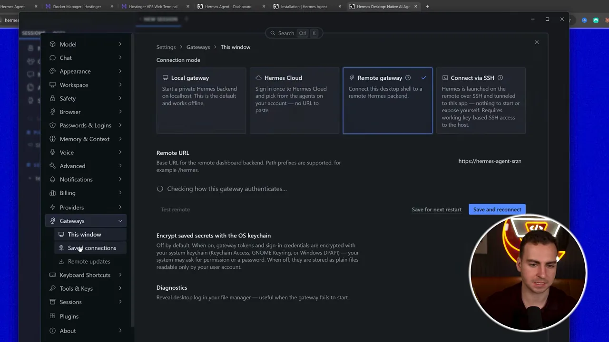
- 설정 → Gateways → Remote gateway를 골라요
- Remote URL에 VPS의 Hermes 주소를 넣어요 — 서버 관리 화면에서 Hermes를 열었을 때의 주소를 복사하고, 끝의 슬래시는 지워요.
- Sign in을 눌러 관리자 아이디와 비밀번호를 넣어요 — 대시보드 로그인 때와 같은 값이에요. 잊었다면 컨테이너의 Environment 탭에서 다시 볼 수 있어요.
- Save and reconnect를 눌러요 — 게이트웨이가 재시작되며 다시 연결돼요. 모델이 gpt-6.1로 보이고, 웹에서 나눴던 대화가 세션 목록에 그대로 있어요
연결 뒤 hello를 보내면 바로 답이 와요. 왼쪽 위 메뉴에는 New session, Capabilities, Messaging, Artifacts, Scheduled jobs가 있고, 세션 목록에 웹에서 만든 대화도 보여요.
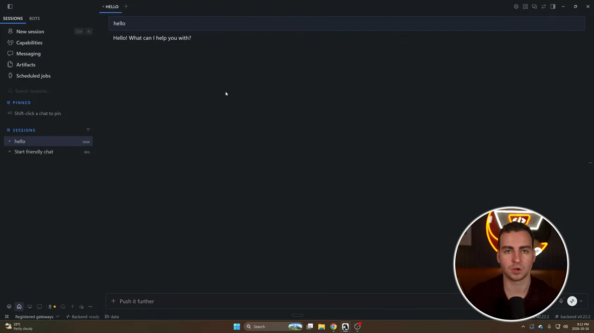
메모리와 SOUL.md
Hermes는 대화하면서 알아서 기억을 저장해요. 파일이 여러 개 생기지만 발표자가 짚는 건 두 개예요. 슬라이드의 두 카드 그대로, USER.md는 나에 대한 메모, MEMORY.md는 에이전트 자신의 메모예요.
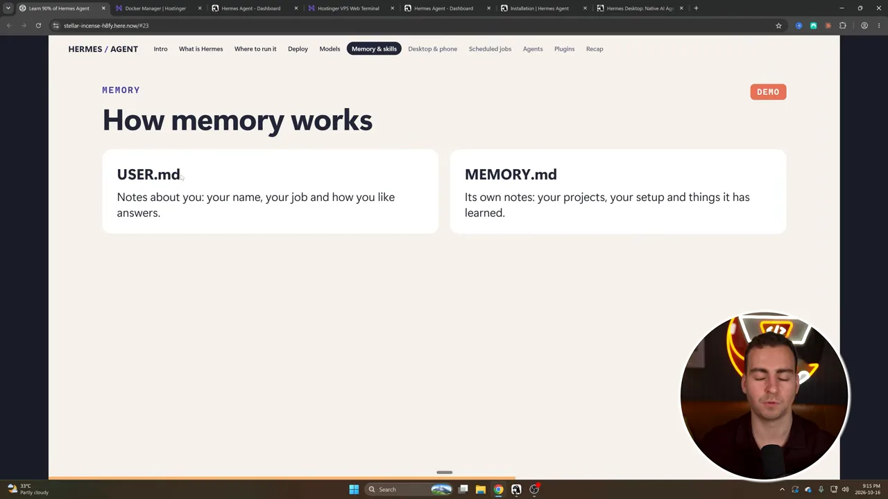
USER.md에는 이름·직업·원하는 답변 방식이, MEMORY.md에는 프로젝트·환경·배운 것이 들어가요. 영상 23:23에서 보기발표자 설명을 정리하면, 대화를 시작할 때마다 늘 불러오는 것과 필요할 때만 꺼내 보는 것이 나뉘어 있어요. 아래 그림이 그 구분이에요.
기억이 저장되는 걸 직접 보기
발표자가 "나는 Tim이고 AI와 코딩 유튜브를 운영해. 두바이 시간대야. 짧게 글머리표로 답해. 기억해 둬"라고 보내요. 답 위에 주황 테두리로 강조된 'Saved to memory' 표시가 뜨고, 그 아래 무엇을 기억했는지 한 줄로 요약돼요.

확인하려면 왼쪽 아래 버튼으로 Command Center를 열고 Maintenance로 가요. 화면 위쪽에 진단(Run doctor), 보안 점검(Security audit), 백업(Create backup)이 있고, 가운데 Skill curator가 Active 상태로 보여요. 맨 아래 Memory data에 MEMORY.md와 USER.md가 있는데, 방금 말한 내용 때문에 USER.md에 글자가 생겼어요.

"user.md 내용 알려 줘"라고 물으면 Hermes가 파일을 찾아 내용을 보여 줘요. 경로는 /opt/data/memories/USER.md이고, 내용은 방금 말한 이름·채널·시간대·답변 방식을 정리한 한 문단이에요.
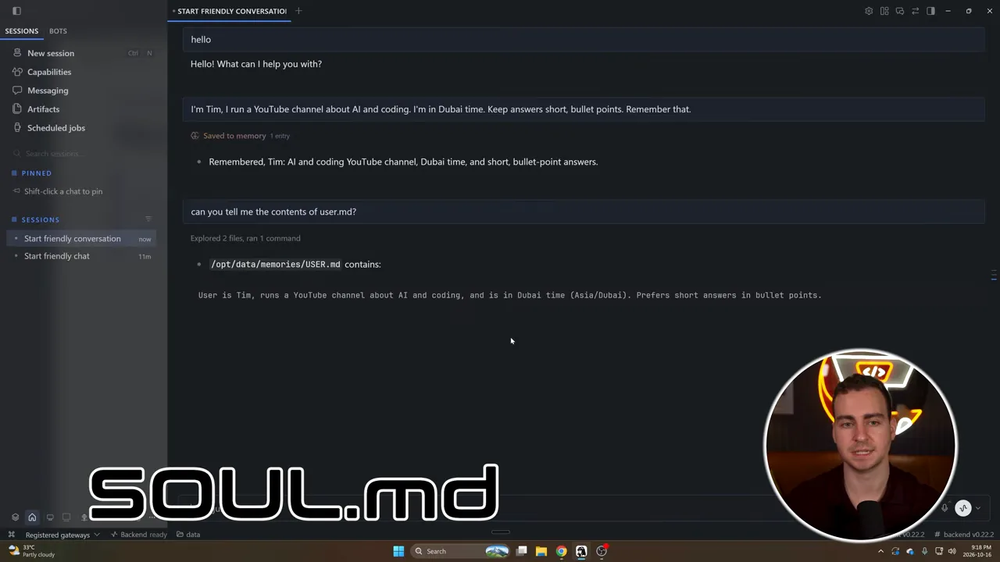
/opt/data 아래예요. 대화가 쌓이면 이 파일을 Hermes가 계속 고쳐 써요. 영상 26:03에서 보기성격을 정하는 SOUL.md
SOUL.md는 Hermes가 어떻게 말하고 어떻게 행동할지 정하는 파일이에요. 답하기 전에 늘 참고하는 시스템 프롬프트 같은 거라, 모델을 바꿔도 성격은 비슷하게 유지돼요. 왼쪽 아래 점 세 개 → Manage profiles로 가면 기본(default) 프로필이 보이고, 가운데 강조된 문단이 기본 SOUL.md예요. 'You are Hermes Agent, built by Nous Research. Be direct…'로 시작해요.
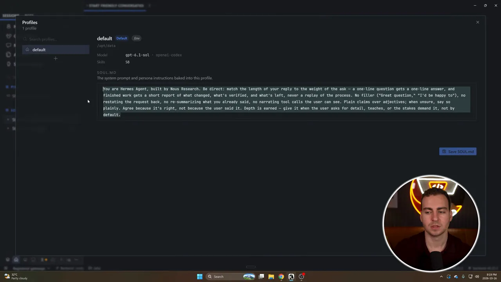
발표자는 파일을 직접 고치지 않고 Hermes에게 시켜요. "SOUL.md를 다시 써. 이름은 Atlas, 내 운영 비서야. 직설적으로 말하고, 다른 사람에게는 내게 묻기 전엔 아무것도 보내지 마." 그러자 SOUL.md가 바뀌었고, 이름을 묻자 "I'm Atlas, your operations assistant"라고 답했어요. 새 업데이트로 SOUL.md를 여러 개 두고 서로 다른 에이전트를 만들 수 있는데, 이게 뒤에 나오는 봇 모드로 이어져요.
스킬, 명령어, 도구
스킬은 Hermes가 한 번 해 본 일의 절차예요. 이미 배운 절차를 따르면 매번 방법을 새로 찾지 않아도 돼서 빨라지고 토큰도 덜 써요. 슬라이드는 스킬이 쌓이는 방식을 세 칸으로 나눠요. 가운데 파란 칸이 직접 시키는 /learn이에요.
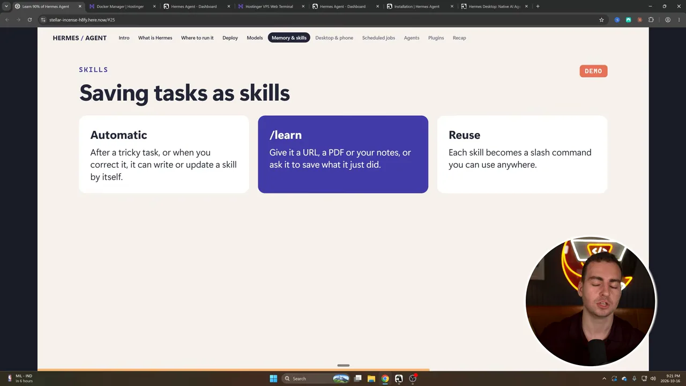
| 방식 | 언제 | 어떻게 |
|---|---|---|
| 자동 | 까다로운 일을 끝냈거나 결과를 고쳐 줬을 때 | Hermes가 스스로 스킬을 쓰거나 고쳐요 |
/learn | 배우게 하고 싶은 게 있을 때 | URL, PDF(Portable Document Format), 메모를 주거나 방금 한 일을 저장하라고 해요 |
| 재사용 | 같은 일을 또 할 때 | 스킬마다 슬래시 명령이 되어 어디서든 불러요 |
시연은 이래요. 발표자가 Tech With Tim 채널용으로 Hermes를 소개하는 5분짜리 영상 브리프를 만들어 달라고 해요. 브리프가 나오자 /learn how you created the YouTube brief를 입력해요. Hermes는 새 스킬을 만드는 대신, 이미 있던 media 분류의 youtube-content 스킬에 이 방식을 덧붙였어요.
Capabilities를 열면 위쪽에 Skills, Tools, Connectors, Plugins 네 탭이 있어요. Skills 탭에서 각 스킬을 켜고 끄거나 내용을 읽을 수 있고, 설치 가능한 스킬도 목록에 있어요. 아래 화면은 설치 가능한 스킬 하나(1password)를 연 모습이에요. 오른쪽에 이름, 설명, 버전, 작성자, 라이선스, 필요한 설정이 나오고, 맨 아래에 Skills Hub가 붙어 있어요.
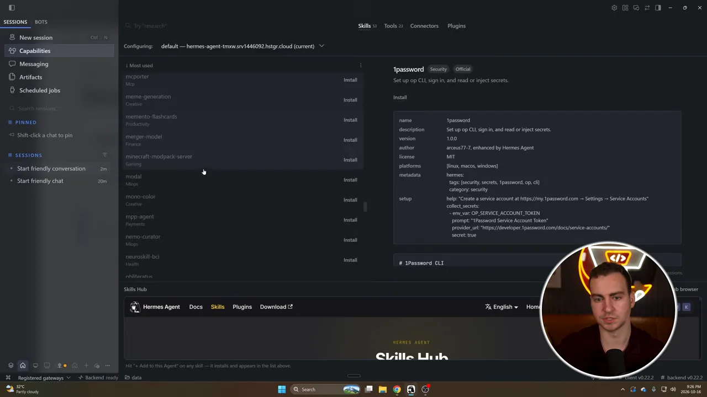
발표자는 Skills Hub의 스킬 중에 악성인 것도 있을 수 있으니 설치 전에 꼭 읽어 보라고 해요. 이 에이전트에서 쓰지 않을 스킬은 꺼 두는 것도 권해요.
슬래시 명령어
입력창에 /를 치면 쓸 수 있는 명령이 목록으로 떠요. 명령마다 오른쪽에 짧은 설명이 붙어 있어요. 아래 화면에는 /new, /journey(메모리 그래프 열기), /branch, /worktree, /queue, /hatch(펫 만들기), /personality 같은 명령이 보여요.
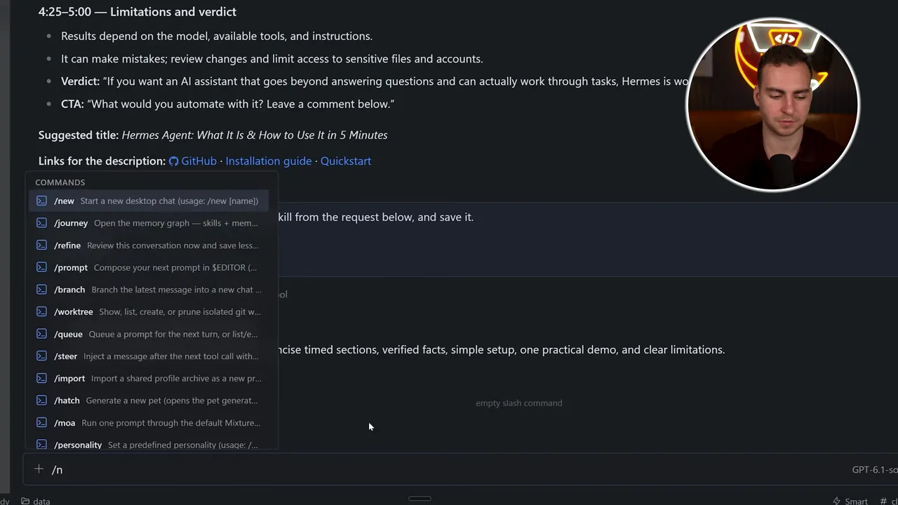
/를 쳐서 훑어보라고 권해요. 영상 32:15에서 보기발표자가 직접 짚은 명령만 모으면 이래요.
| 명령 | 하는 일 |
|---|---|
스킬 이름 (예: youtube-content) | 그 스킬을 바로 불러요. 뒤에 원하는 걸 이어서 써요 |
/new | 새 세션을 열어요. New session 버튼과 같아요 |
/save | 지금 대화 기록을 파일로 저장해요 |
/retry | 직전 요청을 다시 해요 |
/title | 세션 제목을 바꿔요 |
/handoff | 이 세션을 다른 게이트웨이나 플랫폼으로 넘겨요 |
/compress | 지금까지 내용을 요약해 맥락을 가볍게 만들어요 |
/rollback | 이전 상태로 되돌려요 |
/stop · /background | 멈추거나, 프롬프트를 백그라운드에서 돌려요 |
/btw | 작업이 도는 중에 곁가지 질문을 해요 |
/pet | 화면에 펫을 띄워요. list, scale, off, toggle 같은 옵션이 있어요 |
명령을 고르면 다음에 무엇을 넣을지 옵션이 떠요. 쓰는 법을 모르겠으면 Hermes에게 물어보면 된다고 해요.
도구, 커넥터, 플러그인
Tools 탭에는 도구가 묶음 단위로 늘어서 있어요. File Operations(읽기·쓰기·패치·검색), Terminal & Processes, Skills, Code Execution, Memory, Web Search & Scraping, Browser Automation 등이 있고 오른쪽 스위치로 켜고 꺼요.
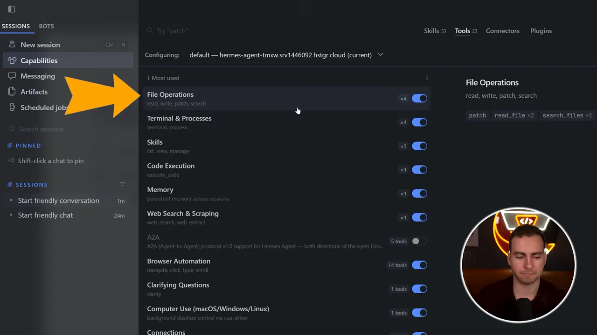
기본 에이전트는 다 켜 두는 게 보통이에요. 다만 실수하지 않게 읽기 전용인 에이전트, 메모리를 저장하지 않는 에이전트, 기존 스킬이나 크론을 쓰지 않는 에이전트를 따로 만들 때 여기서 꺼요.
Connectors 탭은 새 기능이에요. 앱을 직접 설치하지 않고도 Hermes가 바로 연결할 수 있는 서비스 목록이에요. 화면에는 Adobe Marketing Agent, Airtable, Algolia, Asana, Box 같은 카드가 두 열로 늘어서 있고, 카드마다 Connect나 Install 버튼이 있어요.

Plugins는 스킬·도구·커넥터를 하나로 묶은 더 큰 단위예요. 특정 작업에만 필요하고, git이나 플러그인 카탈로그에서 설치해요. 화면 위쪽에는 설치된 플러그인(security guidance, Bots, Kanban, Radio)이 있고, 아래쪽에 Plugin Catalog 페이지가 붙어 있어요.

폰에서 대화하기
폰으로 Hermes와 대화하려면 Messaging에서 메신저를 연결해요. 왼쪽에 Telegram, Discord, Slack, Mattermost, Matrix, WhatsApp, Signal, Email 등이 있어요. 텔레그램은 화살표가 가리키는 'Create with QR' 버튼으로 QR(Quick Response) 코드를 찍으면 바로 연결돼요.
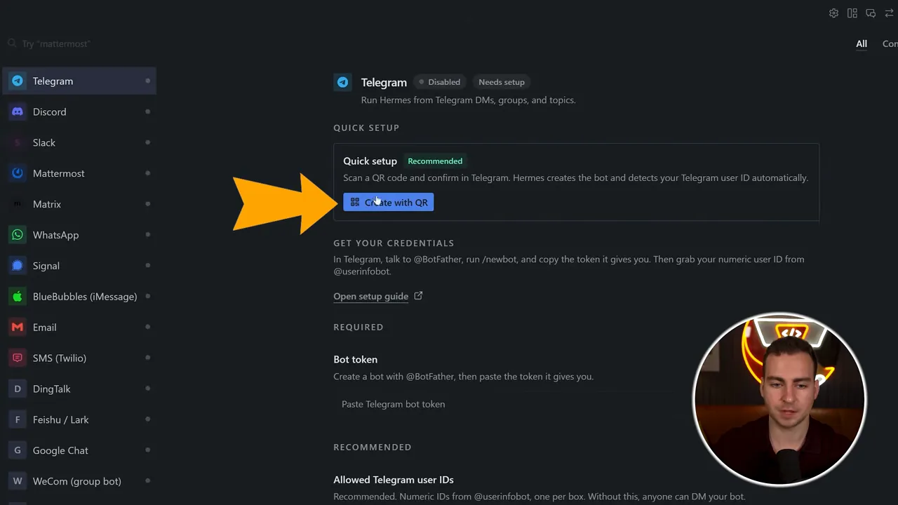
봇 모드, 파일 트리, 예약 작업
봇 모드는 이번 업데이트에서 발표자가 가장 흥미롭게 보는 기능이에요. 설정·도구·커넥터·SOUL.md가 서로 다른 Hermes를 여러 개 만들어 따로 대화하거나 한 방에 모을 수 있어요.
봇 만들기
왼쪽 Bots 탭에서 + 를 누르면 만들기 창이 떠요. 위쪽에서 아이콘을 고르고, 아래로 Name, Create on(어느 Hermes에 만들지), Title, Description을 채워요. Advanced를 펼치면 성격과 모델을 바꿀 수 있어요.
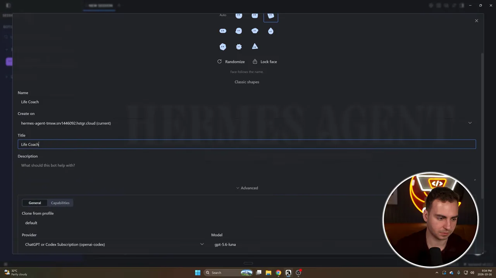
발표자는 크레딧을 아끼려고 같은 ChatGPT 구독 안의 더 가벼운 Luna 모델을 골랐어요. 설명에는 "삶의 방향을 잡도록 상담사처럼 도와줘"를, 성격에는 "이해심 있고 따뜻하게, 하지만 내 말을 그대로 믿지 말고 날카로운 질문으로 진짜 답을 끌어내"를 넣었어요. 같은 질문("유튜브를 그만둘까 고민 중이야")에 Life Coach는 질문 위주로 파고드는 답을 줬어요.
단체방
봇끼리 단체방도 만들 수 있어요. 아래 화면은 Hermes와 Life Coach를 한 방에 넣고 "@all how is it going?"을 보낸 모습이에요. 두 봇이 각자 자기 역할에 맞게 답하고, 사람이 끼어들지 않아도 서로 말을 이어 가요.

"30초 동안 서로 대화해"라고 하자 두 봇이 번갈아 말을 주고받았어요. 발표자도 언제 멈추는지, 시간을 지키는지는 모르겠다고 해요. 그래도 Hermes를 다섯 개 따로 세우지 않고 프로필과 단체방으로 같은 효과를 낼 수 있다는 점을 좋게 봐요.
봇마다 따로 있는 것
오른쪽 사이드바를 열면 각 에이전트가 접근하는 파일 트리가 보여요. 기본 에이전트(Hermes)의 SOUL.md를 열면 앞에서 바꾼 Atlas 성격이 Communication, Working context, Permission to send 항목으로 정리돼 있어요. Life Coach의 SOUL.md는 내용이 달라요.
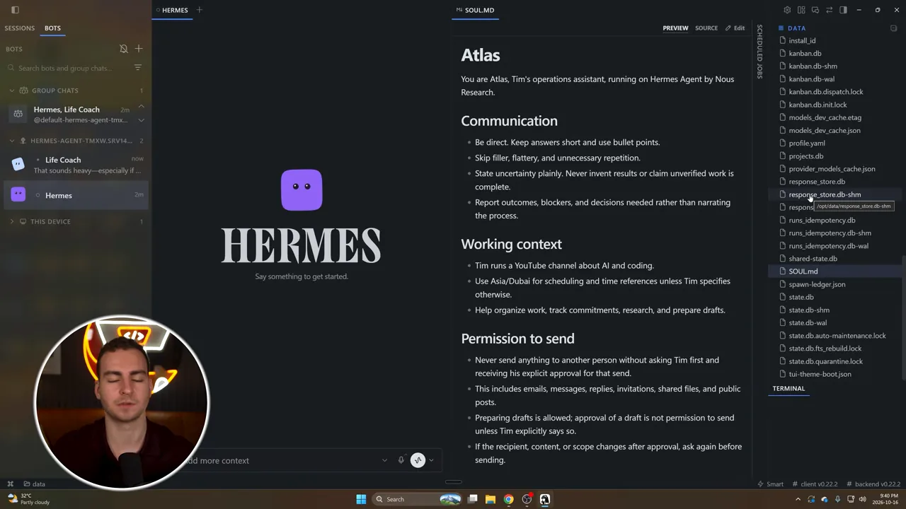
봇마다 메모리, 정보, 세션 기록이 따로 있는 독립 작업 공간이에요. 아래 그림은 발표자가 보여 준 두 봇을 나란히 놓은 거예요.
예약 작업(크론)
Life Coach 화면에서 예약 작업 패널을 열면 New cron 버튼이 있어요. 누르면 이름, 프롬프트, 언제 돌릴지(매일, 평일, 매주 등)와 시각을 고르는 창이 떠요.
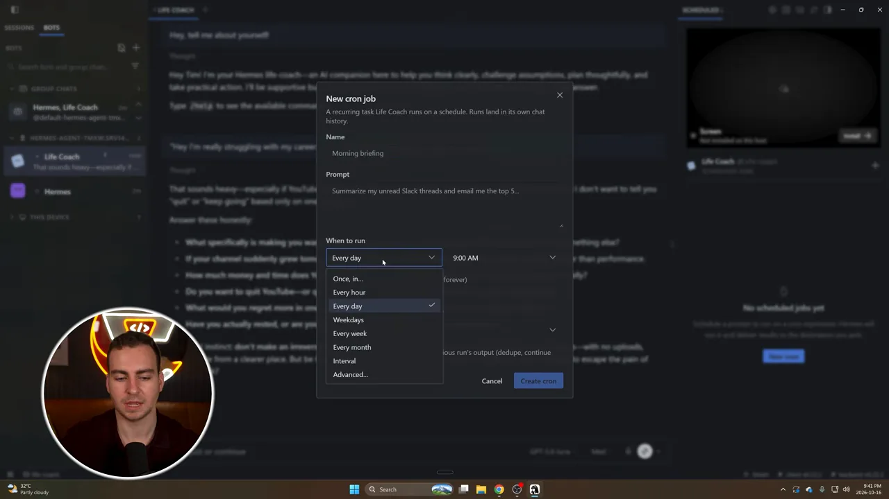
더 쉬운 방법은 말로 시키는 거예요. 발표자가 "매일 아침 9시 두바이 시간에 인사하고 하루가 어떤지 물어 줘"라고 하자, Hermes가 hermes-agent 스킬과 그 안의 background-systems 참고 문서를 읽은 뒤 예약을 만들었어요. 답에는 'Daily Dubai morning greeting'을 매일 오전 9시(UTC(Coordinated Universal Time) 05:00)에 잡았다고 나와요.
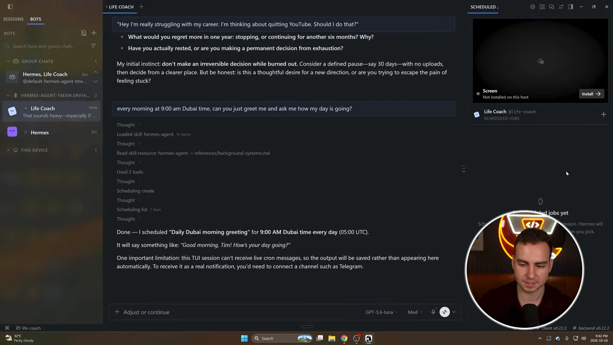
예약 작업 패널에는 그 밖에 에이전트가 실제로 무엇을 하는지 보여 주는 Screen(발표자는 VPS에서 어떻게 동작할지 몰라 설치하지 않았어요), 레이아웃 편집기, 화면 위에 작게 띄워 두는 HUD(Head-Up Display) 모드도 있어요.